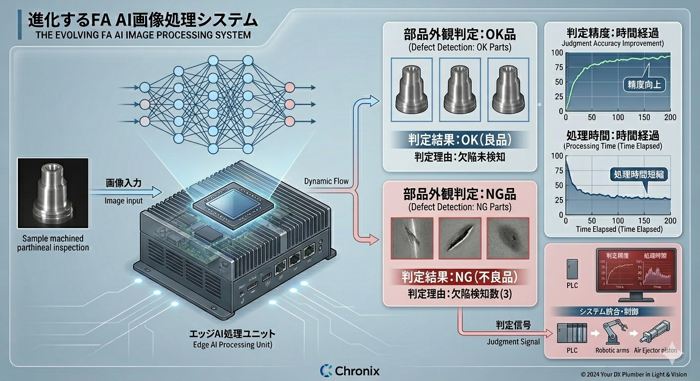
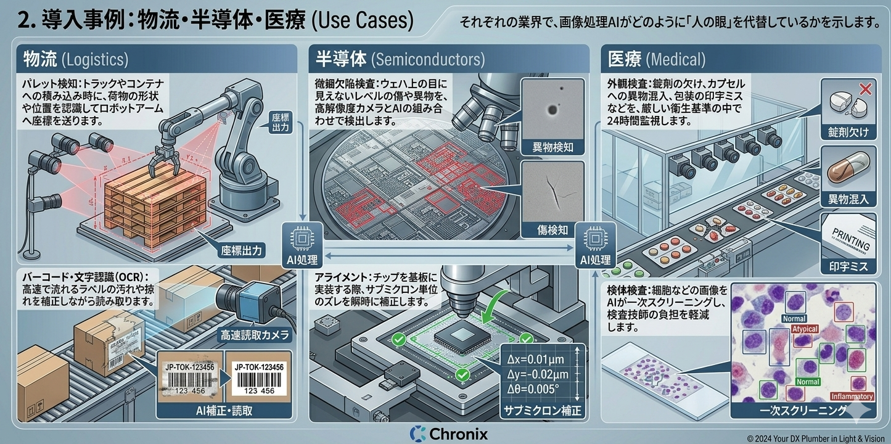

数学的アルゴリズム、AIによる感性判断、そして高速なシステム制御。これらを統合し、現場の「眼」と「判断」を自動化します。
数学的計算に基づき、0.01mm単位の精度と圧倒的な処理速度を両立。寸法計測やAIのための前処理を担う不動の主役です。

人間のような「感覚的な判断」を自動化。個体差や曖昧な基準をクリアし、従来手法では不可能だった領域をカバーします。
表面の微細な傷、汚れ、色ムラを学習データに基づき特定します。
部品の向きやラベル位置を瞬時に特定。複雑な配置の正誤を判別します。

荷物の形状認識によるロボットアーム連携や、高速流動ラインでの汚れ・掠れに強いOCRを実現。
ウェハ上の目に見えない異物検出や、サブミクロン単位のズレを補正する超高精度アライメント。
錠剤の欠け・異物混入の24時間監視。細胞画像の一次スクリーニングによる技師の負担軽減。
耐熱・耐振性に優れた産業用PCにGPU/NPUを搭載。現場での低遅延推論を可能にします。
I2C、EtherNet/IP、CC-Link等を用い、判定結果をPLC（シーケンサ）へ確実に送信します。
NG信号を受けたエアイジェクタが、不良品をミリ秒単位の精度でライン外へ排除します。
現場で発生した新しい不良パターンを収集し、AIモデルを再学習・更新し続ける仕組みを構築します。